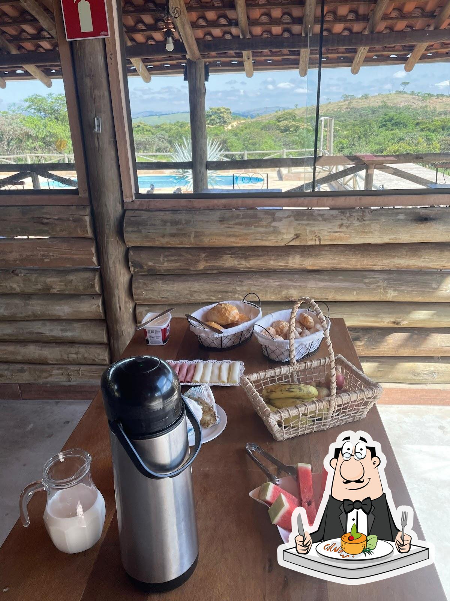

FOTOGRAFIAS REAIS
Origem das imagens.
As fotografias dos chalés e do restaurante foram encontradas no cadastro do Complexo Pé da Serra no Restaurant Guru, onde são identificadas como fotos do Google. As marcas existentes foram preservadas. As imagens regionais são do portal Visite Luminárias. A logo foi fornecida para este projeto.
Os créditos e direitos das fotografias pertencem a seus respectivos autores. As fotos dos chalés representam o conjunto e não identificam uma unidade específica. Os atrativos regionais ficam fora do complexo.
 Chalés e caminho ao entardecerCadastro do complexo · fotos identificadas como do GoogleVer fonte ↗
Chalés e caminho ao entardecerCadastro do complexo · fotos identificadas como do GoogleVer fonte ↗ Fachadas dos chalés do Complexo Pé da SerraCadastro do complexo · fotos identificadas como do GoogleVer fonte ↗
Fachadas dos chalés do Complexo Pé da SerraCadastro do complexo · fotos identificadas como do GoogleVer fonte ↗ Chalé de madeira no Complexo Pé da SerraCadastro do complexo · fotos identificadas como do GoogleVer fonte ↗
Chalé de madeira no Complexo Pé da SerraCadastro do complexo · fotos identificadas como do GoogleVer fonte ↗
Mesa fotografada no restaurante do complexoCadastro do complexo · fotos identificadas como do GoogleVer fonte ↗ Frutas à mesa no complexoCadastro do complexo · fotos identificadas como do GoogleVer fonte ↗
Frutas à mesa no complexoCadastro do complexo · fotos identificadas como do GoogleVer fonte ↗ Ambiente do restaurante à noiteCadastro do complexo · fotos identificadas como do GoogleVer fonte ↗
Ambiente do restaurante à noiteCadastro do complexo · fotos identificadas como do GoogleVer fonte ↗ Mesas e varanda do restauranteCadastro do complexo · fotos identificadas como do GoogleVer fonte ↗
Mesas e varanda do restauranteCadastro do complexo · fotos identificadas como do GoogleVer fonte ↗ Interior de um dos chalés, com cama de casalCadastro do complexo · fotos identificadas como do GoogleVer fonte ↗
Interior de um dos chalés, com cama de casalCadastro do complexo · fotos identificadas como do GoogleVer fonte ↗ Salão do restaurante do Complexo Pé da SerraCadastro do complexo · fotos identificadas como do GoogleVer fonte ↗
Salão do restaurante do Complexo Pé da SerraCadastro do complexo · fotos identificadas como do GoogleVer fonte ↗ Refeição fotografada no restauranteCadastro do complexo · fotos identificadas como do GoogleVer fonte ↗
Refeição fotografada no restauranteCadastro do complexo · fotos identificadas como do GoogleVer fonte ↗ Chalé e jardim do complexoCadastro do complexo · fotos identificadas como do GoogleVer fonte ↗
Chalé e jardim do complexoCadastro do complexo · fotos identificadas como do GoogleVer fonte ↗ Pôr do sol visto da varanda do complexoCadastro do complexo · fotos identificadas como do GoogleVer fonte ↗
Pôr do sol visto da varanda do complexoCadastro do complexo · fotos identificadas como do GoogleVer fonte ↗ Prato fotografado no restaurante do complexoCadastro do complexo · fotos identificadas como do GoogleVer fonte ↗
Prato fotografado no restaurante do complexoCadastro do complexo · fotos identificadas como do GoogleVer fonte ↗ Cachoeira da Serra Grande — atração regional, fora do complexoVisite LumináriasVer fonte ↗
Cachoeira da Serra Grande — atração regional, fora do complexoVisite LumináriasVer fonte ↗ Pico do Cruzeiro — atração regional, fora do complexoVisite LumináriasVer fonte ↗
Pico do Cruzeiro — atração regional, fora do complexoVisite LumináriasVer fonte ↗